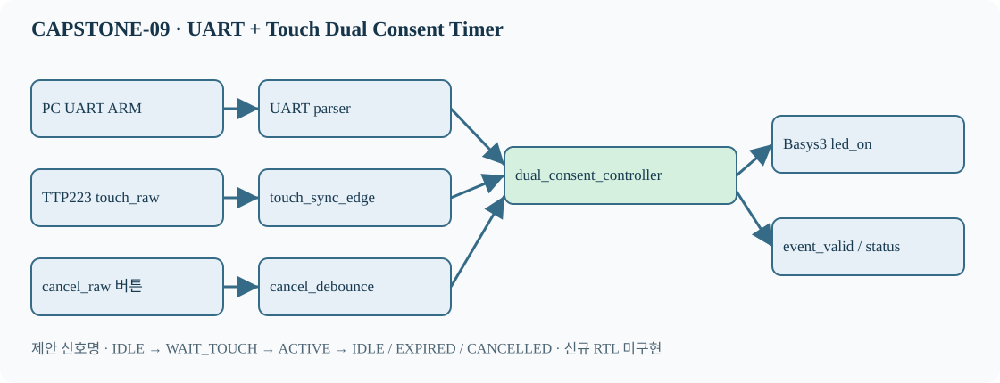

CAPSTONE-09 — UART·터치 이중 승인 저전압 타이머 스위치
자체 창작 설계형 과제. 신규 RTL/TB·합성·보드 검증은 미실시.
1. 실제 표시 가능한 시스템 블록도

SVG 구조도 · JSON 메타데이터 · Markdown 설계서

2. 입출력·전원
| 입력 | 제어 | 출력 |
|---|---|---|
| PC UART ARM + TTP223 터치 + 취소 버튼 | 5초 승인 창 / 10초 LED 구동 / 취소 우선 | Basys3 내장 LED, 상태 이벤트 |
외부 센서는 검증된 3.3V I/O만 연결. 5V 출력 직접 연결 금지. 릴레이·상용전원·모터는 연결하지 않음.
3. FSM 및 타이밍
IDLE --ARM--> WAIT_TOUCH --새 touch_rise < 5000ms--> ACTIVE --10000ms--> IDLE WAIT_TOUCH --5000ms--> EXPIRED --> IDLE WAIT_TOUCH / ACTIVE --cancel_pulse--> CANCELLED --> IDLE Reset 또는 취소 우선 · 중복 ARM으로 타이머 연장 불가
4. 신호와 구현 경로
| 신호 | 의미 |
|---|---|
arm_pulse | 완전한 UART 명령 수신 |
touch_rise | 동기화 터치 상승 펄스 |
cancel_pulse | 취소 버튼 디바운스 |
tick_1ms | 시간 기준 |
led_on | 승인된 출력 |
event_valid | 상태 변경 이벤트 |
선수학습: UART RX/파서 → 동기화·FSM·카운터 → 독립 Controller + TB → AXI GPIO → Custom AXI4-Lite → MicroBlaze V SoC.
5. 검증 시나리오
T01 Reset LED OFF T02 ARM + 터치 → ACTIVE T03 터치만 → OFF T04 5000ms 만료 → OFF T05 만료/터치 동시 → 만료 우선 T06 ACTIVE 중 중복 ARM → 연장 없음 T07 취소 → 즉시 OFF T08 터치 HIGH 유지 → 새 상승 없으면 미승인 T09 10000ms → OFF T10 잘못된 UART 명령 → 무시
위 항목은 예정된 테스트 시나리오이며 실행 통과 결과가 아닙니다.
6. 원본·출처 및 검증 수준
자체 창작 제어 정책. TTP223 자료, UART 기술자료, RTL 교육자료, SoC 맵을 참고합니다. Keyestudio/Freenove 원본 코드·그림·회로도는 복제하지 않았으며 라이선스 확인 없이 재배포하지 않습니다.
Markdown·SVG·JSON은 설계 산출물. 신규 RTL·C·AXI 통합 미구현, 시뮬레이션·합성·Timing·실물 보드 시험 미실시.